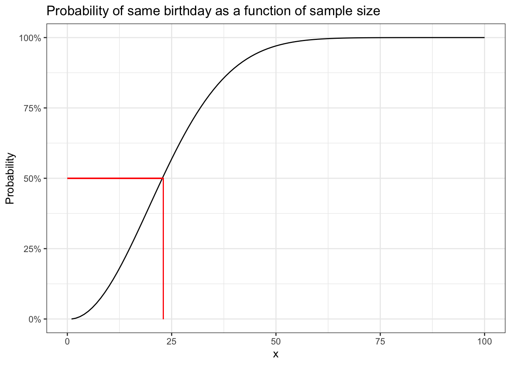

Chapter 1 Introduction
1.0.1 R packages required for this chapter
library(knitr)
library(tidyverse)1.1 Preface
This is an intermediate epidemiology book that focuses on the methods most commonly encountered in problems arising in the domain of clinical epidemiology. The emphasis is on research design, quantitative analysis, critical thinking, and reproducible research methods. As it is my belief that epidemiologic principles are fundamental to high quality medical research and the learning and evaluation of these principles are best consolidated through direct application to problem solving, the text emphasizes the use of quantification, via open source software.
By the end of the book students can expect to:
• Understand and critically evaluate basic study designs and statistical inferences in medical research
• Understand, identify, and quantitatively evaluate sources of bias in epidemiologic and clinical studies
• Master quantitative techniques for visualizing, cleaning, analyzing and interpreting epidemiologic and clinical data, including descriptive analyses, stratified analyses, regression analyses and meta-analyses.
1.2 Prerequisites
There are multiple excellent introductory (Gordis 2014) (Rothman 2012), intermediate (Szklo and Nieto 2019) and advanced (Rothman, Greenland, and Lash 2008) epidemiology textbooks. There are no obligatory prerequisites for this book, although its use will be easier if there has been some prior exposure to basic epidemiologic concepts.
1.3 My general philosophy for clinical epidemiology
The standard definition of epidemiology is the study of the distribution and determinants of health-related states or events in specified populations, and the application of this study to the control of health problems (Last 2001).
This definition may be expanded as follows:
* The distribution of health-related states refers to analysis by time, place, and population.
* The different varieties of epidemiologic study include; i) Descriptive: looking at patterns of disease within and between populations, trying to understand why disease rates go up and down, population variation ii) Etiologic: understand the causes of disease, with implications for interventions to change disease distributions iii) Predictive: predict outcomes for future patients, with implications for interventions to alter outcomes
* The common determinants of of health-related states are biological, behavioral, social, cultural, economic, and political factors that influence health
* The ultimate goal of epidemiology is the advancement of scientific knowledge to promote, protect, and restore health
Clinical epidemiology may therefore be seen (?defined) as the application of epidemiologic principles and reasoning to improve clinical decision making and ultimately “patient” outcomes. However, I think it is preferable to interpret the term “patient” in the widest possible context, and consequently clinical epidemiology might range from the study of preventive measures in asymptomatic individuals to the evaluation of quaternary hospital interventions in large cohorts. As patient cohorts may arise not only from hospitals but also from specific neighborhoods, cities, provinces and countries the distinction between classic epidemiology and clinical epidemiology is hardly distinct. Consequently, while this book will focus on clinical applications, the underlying methods of classic epidemiology will also be presented, admittedly in a focused or condensed manner.
Epidemiology is the quantitative heart of both public health & clinical medicine (i.e. the science of counting within and across populations). This book will emphasize a hands-on quantitative approach to clinical epidemiology. Realizations that “if you can’t measure something, you can’t improve it” and “intuition without quantification is often too imprecise to be useful” support the importance of a rigorous quantitative approach. Epidemiology concepts may be vague, or plain hard to understand, and practical data manipulation provides opportunities to reinforce our understanding of these methods making us both better consumers and producers of medical research.
While this book stresses a quantitative approach, one must be careful to avoid the McNamara or the quantifiable fallacy “if you can’t measure what is important, make what you can measure important,” first documented during the Vietnam war, but similar erroneous uses of quantification may arise in clinical medicine. For example, progression-free survival (PFS) as a primary endpoint in many cancer trials largely because it is an endpoint which is easily measurable, but it meaningfulness compared to other metrics such as overall quality of life or overall survival is highly questionable.(Kim and Prasad 2015) Extensive quantification of biased results are also of no value. Consequently this book will also concentrate on recognizing common biases and assuring the application of methodologic rigor at all levels of study design, analysis, interpretation, and dissemination.
1.4 Brief excursions into quantification
This is a brief excursions into quantification or why intuition is not good enough. Herein I offer several examples that hopefully highlight the need for careful quantification in order to reach reasonable conclusions.
1. Birthday problem
First, consider the birthday problem, a common parlor game, which shows how we may underestimate the play of chance. Imagine you are in a class of 60 people, what is the probability that at least 2 people share the same birthday?
Potential answers
## A. < 5%
## B. 5 - 15%
## C. 15 - 25%
## D. >99%Most people, who aren’t already aware of the “trick” or “paradox” assume the probability is small given that a birthday may in occur on any one of 365 possible days. Given our natural tendency to egocentricity they imagine there are 59 chances of some else having the same birthday as them, or a probability of 59/365 or 16.2%. However this ignores the other 1711 (5958) possible combinations between someone who is not you being compared to someone else who is also not you. Also as we will see, calculations involving exponentials are hardly intuitive to most people who tend to think in linearities.
As an easy solution, begin by considering the reverse problem what is the probability that no one has the same birthday as you. For the 2nd person, first next to you, probability of not being born on the same day as you = 364/365.
So the probability that 3rd person not on the same day as first 2 persons = 364/365 363/365 and
The probability i th person not on the same day as 1st i-1 = 364/365 * 363/365 * 362/365 * (n-1)/365 or
\[ \prod_{i=0}^{i-1} (1- \dfrac{i}{365}) \]
Then the probability of being born on the same day = 1 - probability not being born on the same day. These calculations can be easily performed in R.
# create a birthday function to calculate probability of 2 people in a group (with a default group of 23)
# default of 23 since that gives probbaility = 50%
birthday <- function(n=23){
1-prod(1-(0:(n-1))/365)
}
birthday(60)## [1] 0.9941# see why the default is 23 -> 50% probability
birthday()## [1] 0.5073p <- numeric(100)
for(i in 1:100){
p[i] <- birthday(i)
}
p <- data.frame(x=seq(1,100, 1), p=p)
ggplot(p, aes(x,p)) +
geom_line() +
scale_y_continuous(labels = scales::percent_format()) +
labs(y = "Probability") +
ggtitle("Probability of same birthday as a function of sample size") +
geom_segment(aes(x = 0, y = .50, xend = 23, yend = .50), color="red") +
geom_segment(aes(x = 23, y = .50, xend = 23, yend = 0), color="red") +
theme_bw()
So the probability of finding 2 people in a class of 60 with the same birthday is >99%. The graph also shows that provided there are more than 23 people in the class the probability will be > 50%. One can alaso appreciate the non-linearity of the relationship. To give an idea about the range of functions in R it should be noted that you don’t have to write your own birthday function as above but can simple call the built in pbirthday function. One can also verify these calculations by doing simulations as demonstrated in this blog.
# using the built in R function
cat("The probability of 2 people with the same bithday in a group of 23 is ", pbirthday(23), " and for a group of 60 is ",
pbirthday(60))## The probability of 2 people with the same bithday in a group of 23 is 0.5073 and for a group of 60 is 0.99412. Voter suppression
Now being able to solve party games is a good, but not the only, reason to develop your quantitative skills. Consider the very current issue of voter suppression. A news story reported that in Georgia, where 32% of the population is black, the state has recently removed 670,000 voters of whom 70% were black. Is this difference likely due to the play of chance? In other words, how likely are we to observe 469,000 (.7 * 670,000) blacks out of 670,000 if the selection probability is the same as the proportion of blacks in the general population (32%). This can be found with 1 line of code. Additional information about this function can be found with help(binom.test).
binom.test(469000, 670000, .32)##
## Exact binomial test
##
## data: 469000 and 670000
## number of successes = 469000, number of trials = 670000, p-value <2e-16
## alternative hypothesis: true probability of success is not equal to 0.32
## 95 percent confidence interval:
## 0.6989 0.7011
## sample estimates:
## probability of success
## 0.7It appears highly unlikely to have excluded htis number of black voters if the null hypothesis is that voter suppression is independent of race.
3. Avoiding disasters
In 2018, medical researchers form John Hopkins reported a clinical trial in JAMA entitled “Effect of a Program Combining Transitional Care and Long-term Self-management Support on Outcomes of Hospitalized Patients With Chronic Obstructive Pulmonary Disease A Randomized Clinical Trial” that concluded the intervention lead to “significantly fewer COPD related hospitalizations.” The next year the authors published a retraction and a new article that concluded the intervention lead to “significantly greater COPD related hospitalizations.”
The problem was a simple miscoding of the intervention and control arms. Being able to read and follow code, can assure that extra eyes are available to catch these errors which can happen to all of us. While reviewing their code to correct this major error, the research team discovered at least two other areas of erroneous code (in the commands to impute missing values and to aggregate data into summary variables).
On a broader level, sharing analytic code is increasingly the norm across many fields and provides an unambiguous record of the analytical methods used, aiding reproducibility, helping avoid duplicated effort and possibly accelerating innovation. it would be nice to see this become the norm in clinical epidemiology.
1.5 Outline
The scientific discipline of epidemiology has greatly expanded from its origin narrow focus on communicable disease epidemics to broadly include all phenomena related to population health. The aim of this book is assist in developing the design and analytical skills to critically evaluate (and produce) medical research that avoids biases and quantitative errors. The topics to be discussed will hopefully assist healthcare personnel in reaching the goal of being better consumers and producers of an ever expanding medical literature.
For a variety of reasons, not the least of which is my inexperience and lack of knowledge about publishing a html book, I have decided to make this book into two or three volumes. This will also allow me to release material more quickly and hopefully get feedback to correct the errors, incorporate suggestions, and generally improve the overall content.
| Chapter | Topic |
|---|---|
| Chapter 1 | Introduction to clinical epidemiology |
| Chapter ?? | Introduction to statistical software - R |
| Chapter 2 | Exploratory Data Analysis - Data visualization |
| Chapter 3 | Contingency tables, measures of association & R packages |
| Chapter 4 | Statistical inference |
| Chapter 5 | Non-experimental designs & incidence measures |
| Chapter 6 | References |
Future volumes are likely to include the following topics
- Causal inference
- Confounding
- Effect Measure Modification & interaction
- Stratification & adjustment
- Overview of biases (selection and information)
- Quantitative bias analysis
- Poisson regression
- Survival analysis
- Propensity Scores / Instrumental variables
- Randomized clinical trials
- Meta-analysis
- Pharmacoepidemiology
- Evidence based medicine / Guidelines
- Health economics / ethics
<!--chapter:end:01-intro.Rmd-->
# Introduction to statistical software - R {#soft}
### R packages required for this chapter
```r
library(knitr)
library(tidyverse)
library(broom)
library(psych)
library(magrittr)A twitter post has nicely summarized 10 reasons “Why should I bother learning to code”;
- Encourages reproducible statistical analyses
- Enables easy incorporation of “New” and “personalized” statistical methods
- Code sharing - be inspired and inspiring
- Career perspectives increased with this skill
- Data visualization -> better understanding of your data
- Avoid copy / paste frustrations
- Customization - get exactly what you want
- Develop interactive graphs and web-apps to increase dissemination and understanding of your work
- Consults with a statistician easier
- Personal satisfaction (it can be fun)
In summary, coding has the attributes of flexibility, transparency, and reproduciblity which should enhance overall research quality.
1.6 Statistical software - R
The most important element in clinical epidemiology is NOT which statistical software is chosen but rather an in depth understanding the basic epidemiologic and statistical concepts. Having said that, there are many advantages for R, largely summarized by the fact that R is the lingua franca of data science, used by millions of data experts.
Why R?
- Free and open source software environment for statistical computing and graphics
- Open source indicates the original source code is freely available, may be redistributed, and modified
- Allows & encourages researchers to modify, extend, and develop additions to the base program
- Additions are referred to as packages
- Use of scripts and Rmarkdown encourages reproducible research
- Active online community facilitates formal courses, sharing of solutions to coding queries
- Rstudio, an integrated development environment (IDE) greatly facilitates the
Rexperience
- Combining with
Rmarkdowncan easily create, reproduce and share your work via html or pdf files
This book is not intended to be first line resource for learning R, as there are many excellent online learning resources. It should be noted that there are at least 2 flavors or R - 1) standard base R 2) tidyverse version, a collection of R packages designed with a common philosophy, grammar, and data structures especially useful for data science.
Learning and help resources
Rdefinitive online resource can be found at CRAN has a number of manuals online
- Condensed
Rreference card can be found [here][https://cran.r-project.org/doc/contrib/Short-refcard.pdf]
- The swirl tutorial teaches R programming and data science interactively, install
swirlwithinstall.packages("swirl")and run with theswirl()command
- Helpful cheet sheets can be found as the RStudio website
- UCLA
- Quick R
- R blogger, a daily compilation of R blogs from over the interent
- Advanced R
- After acquiring the basics, many questions are answered with the help of Stackoverflow
- Good old Google using “r type your question”
Within the R environment to find help for a specific function, for example epi.2by2 in the EpiR package try typing
* help("epi.2by2")
* example("epi.2by2")
* help.search("epi.2by2")
* RSiteSearch(“epi.2by2”) - provides online search
Packages
The capabilities of base R are greatly extended using “packages.” These are distributed over the Internet via CRAN and can be downloaded either directly during an R session by typing the command install.packages("pakage.name"). Alternatively this can be done via RStudio which also provides a directory of all downloaded and installed packages. In 2010, there were about 2,000 packages, by 2016 there were almost 10,000 and by 2020 this has reached almost 17,000. This rapid growth of these important resources is one of the prime reasons for the ever increasing popularity of R. Of course, there is also a chick and egg argument that sees the increasing popularity of R as a reason why more people are contributing packages.
For epidemiologists some of the standard epidemiology packages include epiR, epibasix, epitools, and Epi but there are over 30 packages including some that are ultra specialized.

Figure 1.1: Epi packages available on CRAN
1.7 R - Common data and variable manipulations
R is a programming language based on the concept of objects, which may be data or code, in the form of procedures. The data structures are a form of organizing and storing data are four basic types - vector (single dimension structure of 1 type), matrix (two dimension structure of 1 type), list (single dimensional data structure of different types), & data frame (special case of a list where each component is of same length). Data frames are the most common data structure used in epidemiology analyses.
Here are some common data manipulations in R that represent the minimal knowledge or comfortable level that the reader may like to have to easily follow the code in later chapters.
Creating a data frame
# creation of a simple data frame (dat)
dat <- data.frame('id'=1:4, 'Age'=c(21,15,14,18), 'Gender'=c('M','F','F','M'))
dat## id Age Gender
## 1 1 21 M
## 2 2 15 F
## 3 3 14 F
## 4 4 18 MRead a data file
dat1 <- read.csv("data/pima_db.csv")
head(dat1,3)## Pregnancies Glucose BloodPressure SkinThickness Insulin BMI
## 1 6 148 72 35 0 33.6
## 2 1 85 66 29 0 26.6
## 3 8 183 64 0 0 23.3
## DiabetesPedigreeFunction Age Outcome
## 1 0.627 50 1
## 2 0.351 31 0
## 3 0.672 32 1Other file formats including Excel, SAS, Stata, SPSS files can be read with readxl::read_excel(), sas7bdat::read.sas7bdat(), Hmisc::spss.get(), foreign::read.dta() respectively.
Variable manipulation
# create a new variable based on cutoff on existing variable
# Base R
dat1$Glucose_hi <- NA
dat1[dat1$Glucose >120, 'Glucose_hi'] <- 1
dat1[dat1$Glucose <=120, 'Glucose_hi'] <- 0
head(dat1[,c(1:3,8:10)],4)## Pregnancies Glucose BloodPressure Age Outcome Glucose_hi
## 1 6 148 72 50 1 1
## 2 1 85 66 31 0 0
## 3 8 183 64 32 1 1
## 4 1 89 66 21 0 0#tidyverse
library(tidyverse)
dat2 <- dat1 %>% mutate(Age_old = ifelse(Age > 50, 1, 0))
head(dat2[,c(1:3,8:11)],10)## Pregnancies Glucose BloodPressure Age Outcome Glucose_hi Age_old
## 1 6 148 72 50 1 1 0
## 2 1 85 66 31 0 0 0
## 3 8 183 64 32 1 1 0
## 4 1 89 66 21 0 0 0
## 5 0 137 40 33 1 1 0
## 6 5 116 74 30 0 0 0
## 7 3 78 50 26 1 0 0
## 8 10 115 0 29 0 0 0
## 9 2 197 70 53 1 1 1
## 10 8 125 96 54 1 1 1Variable and data subsetting
#################
# Variable subsetting
#################
# Base R
dat1s = subset(dat1, select = c('Pregnancies', 'Glucose'))
head(dat1s)## Pregnancies Glucose
## 1 6 148
## 2 1 85
## 3 8 183
## 4 1 89
## 5 0 137
## 6 5 116# tidyverse
dat1 %>% dplyr::select(Pregnancies, Glucose) %>% head()## Pregnancies Glucose
## 1 6 148
## 2 1 85
## 3 8 183
## 4 1 89
## 5 0 137
## 6 5 116#################
# Data subsetting
#################
# Base R #1
dat1s <- subset(dat1, subset = Pregnancies >2 & Glucose_hi == 1) # notice need for == when looking for equality
head(dat1s[,c(1:4,8:10)])## Pregnancies Glucose BloodPressure SkinThickness Age Outcome Glucose_hi
## 1 6 148 72 35 50 1 1
## 3 8 183 64 0 32 1 1
## 10 8 125 96 0 54 1 1
## 12 10 168 74 0 34 1 1
## 13 10 139 80 0 57 0 1
## 15 5 166 72 19 51 1 1# Base R #2
dat1ss = dat1[which(dat1$Pregnancies >2 & dat1$Glucose_hi ==1),]
head(dat1ss[,c(1:4,8:10)])## Pregnancies Glucose BloodPressure SkinThickness Age Outcome Glucose_hi
## 1 6 148 72 35 50 1 1
## 3 8 183 64 0 32 1 1
## 10 8 125 96 0 54 1 1
## 12 10 168 74 0 34 1 1
## 13 10 139 80 0 57 0 1
## 15 5 166 72 19 51 1 1# tidyverse
library(tidyverse)
dat1 %>% dplyr::filter(Pregnancies >2 & Glucose_hi == 1) %>% head(,c(1:4,8:10))## Pregnancies Glucose BloodPressure SkinThickness Insulin BMI
## 1 6 148 72 35 0 33.6
## 2 8 183 64 0 0 23.3
## 3 8 125 96 0 0 0.0
## 4 10 168 74 0 0 38.0
## 5 10 139 80 0 0 27.1
## 6 5 166 72 19 175 25.8
## DiabetesPedigreeFunction Age Outcome Glucose_hi
## 1 0.627 50 1 1
## 2 0.672 32 1 1
## 3 0.232 54 1 1
## 4 0.537 34 1 1
## 5 1.441 57 0 1
## 6 0.587 51 1 1Basic Data Descriptions
# Base R
summary(dat1)## Pregnancies Glucose BloodPressure SkinThickness Insulin
## Min. : 0.00 Min. : 0 Min. : 0.0 Min. : 0.0 Min. : 0.0
## 1st Qu.: 1.00 1st Qu.: 99 1st Qu.: 62.0 1st Qu.: 0.0 1st Qu.: 0.0
## Median : 3.00 Median :117 Median : 72.0 Median :23.0 Median : 30.5
## Mean : 3.85 Mean :121 Mean : 69.1 Mean :20.5 Mean : 79.8
## 3rd Qu.: 6.00 3rd Qu.:140 3rd Qu.: 80.0 3rd Qu.:32.0 3rd Qu.:127.2
## Max. :17.00 Max. :199 Max. :122.0 Max. :99.0 Max. :846.0
## BMI DiabetesPedigreeFunction Age Outcome
## Min. : 0.0 Min. :0.078 Min. :21.0 Min. :0.000
## 1st Qu.:27.3 1st Qu.:0.244 1st Qu.:24.0 1st Qu.:0.000
## Median :32.0 Median :0.372 Median :29.0 Median :0.000
## Mean :32.0 Mean :0.472 Mean :33.2 Mean :0.349
## 3rd Qu.:36.6 3rd Qu.:0.626 3rd Qu.:41.0 3rd Qu.:1.000
## Max. :67.1 Max. :2.420 Max. :81.0 Max. :1.000
## Glucose_hi
## Min. :0.000
## 1st Qu.:0.000
## Median :0.000
## Mean :0.454
## 3rd Qu.:1.000
## Max. :1.000# Other approaches
psych::describe(dat1)## vars n mean sd median trimmed mad min
## Pregnancies 1 768 3.85 3.37 3.00 3.46 2.97 0.00
## Glucose 2 768 120.89 31.97 117.00 119.38 29.65 0.00
## BloodPressure 3 768 69.11 19.36 72.00 71.36 11.86 0.00
## SkinThickness 4 768 20.54 15.95 23.00 19.94 17.79 0.00
## Insulin 5 768 79.80 115.24 30.50 56.75 45.22 0.00
## BMI 6 768 31.99 7.88 32.00 31.96 6.82 0.00
## DiabetesPedigreeFunction 7 768 0.47 0.33 0.37 0.42 0.25 0.08
## Age 8 768 33.24 11.76 29.00 31.54 10.38 21.00
## Outcome 9 768 0.35 0.48 0.00 0.31 0.00 0.00
## Glucose_hi 10 768 0.45 0.50 0.00 0.44 0.00 0.00
## max range skew kurtosis se
## Pregnancies 17.00 17.00 0.90 0.14 0.12
## Glucose 199.00 199.00 0.17 0.62 1.15
## BloodPressure 122.00 122.00 -1.84 5.12 0.70
## SkinThickness 99.00 99.00 0.11 -0.53 0.58
## Insulin 846.00 846.00 2.26 7.13 4.16
## BMI 67.10 67.10 -0.43 3.24 0.28
## DiabetesPedigreeFunction 2.42 2.34 1.91 5.53 0.01
## Age 81.00 60.00 1.13 0.62 0.42
## Outcome 1.00 1.00 0.63 -1.60 0.02
## Glucose_hi 1.00 1.00 0.18 -1.97 0.02broom::tidy(dat1)## # A tibble: 10 x 13
## column n mean sd median trimmed mad min max range
## <chr> <dbl> <dbl> <dbl> <dbl> <dbl> <dbl> <dbl> <dbl> <dbl>
## 1 Pregn… 768 3.85 3.37 3 3.46 2 0 17 17
## 2 Gluco… 768 121. 32.0 117 119. 20 0 199 199
## 3 Blood… 768 69.1 19.4 72 71.4 8 0 122 122
## 4 SkinT… 768 20.5 16.0 23 19.9 12 0 99 99
## 5 Insul… 768 79.8 115. 30.5 56.7 30.5 0 846 846
## 6 BMI 768 32.0 7.88 32 32.0 4.6 0 67.1 67.1
## 7 Diabe… 768 0.472 0.331 0.372 0.422 0.168 0.078 2.42 2.34
## 8 Age 768 33.2 11.8 29 31.5 7 21 81 60
## 9 Outco… 768 0.349 0.477 0 0.312 0 0 1 1
## 10 Gluco… 768 0.454 0.498 0 0.443 0 0 1 1
## # … with 3 more variables: skew <dbl>, kurtosis <dbl>, se <dbl>1.8 RStudio - The IDE for R
RStudio is an integrated development environment (IDE) for R. For overall convenience, flexibility, educational resources, and ongoing development it is in my opinion an unparalleled environment for working in R. It offers a multi-pane console, syntax-highlighting editor that supports direct code execution, as well as tools for plotting, history, project and workspace management. There are many tools within RStudio that facilitate coding including numerous shortcuts which accessed from a drop down menu within RStudio and can be found here. Several shortcuts that I find most helpful are listed below.
Table: Very useful RStudio shortcuts
| Command | Windows | Mac |
|---------------------------------- |--------------------------------------------- |----------------- |
| Assignment operator | Alt + - | Opt + - |
| Commenting & Uncommenting Code | Ctrl + Shift + C | Cmd + Shift + C |
| Add the Pipe %>% | Ctrl + Shift + M | Cmd + Shift + M |
| Keyboard Shortcut Cheat Sheet | Alt + Shift + K | Opt + Shift + K |
| Move cursor beginning of line | Home | Cmd+Left |
| Move cursor to end of line | End | Cmd+Right |When using RStudio, it generally most helpful to begin by creating a New Project from theFiledrop down menu. As you will soon appreciate this has definitely file management advantages. For individual files, I find it most useful to create individual RMarkdown documents. For this book, each chapter is a separateRmdfile. These files have the advantage of being able to combine free text andRcode chunks which via a synthesis of themarkdownlanguage andPandoc` allows the output to be on the format of your choice (html, LaTex/pdf, WORD).
1.9 R - More than a statistical program
R is much more than a mere statistical program. It is a complete programming language which while highly advantageous does result in a non trivial learning curve. One of the most outstanding attributes of R is the ability to produce publication quality data visualizations with either base R or within the tidyverse universe by using ggplot2 (see next chapter). Interactive graphics can also be easily produced. To appreciate the range of graphical activities possible, here is a self portrait drawn by R. The code for this may be found here.

Figure 1.2: Self portrait
Some beautiful art and the accompanying R code can be found here

Figure 1.3: R art
1.10 R - General Public License
R is free software and comes with ABSOLUTELY NO WARRANTY. You are welcome to redistribute it under the terms of the GNU General Public License versions 2 or 3. For more information about these matters see http://www.gnu.org/licenses/.